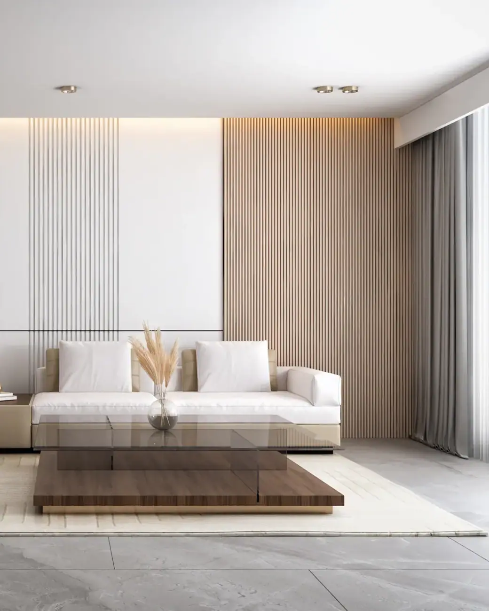
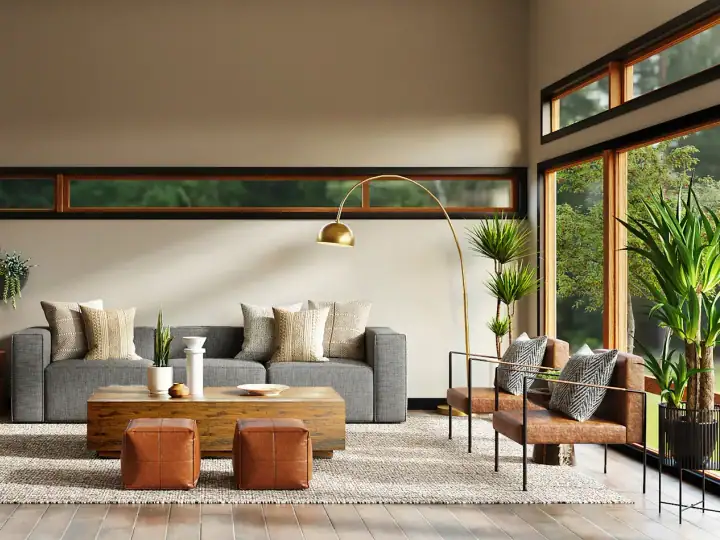
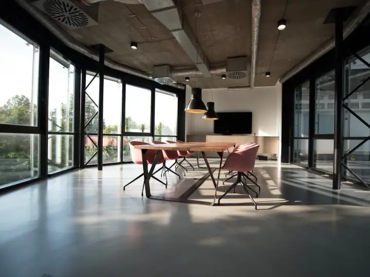
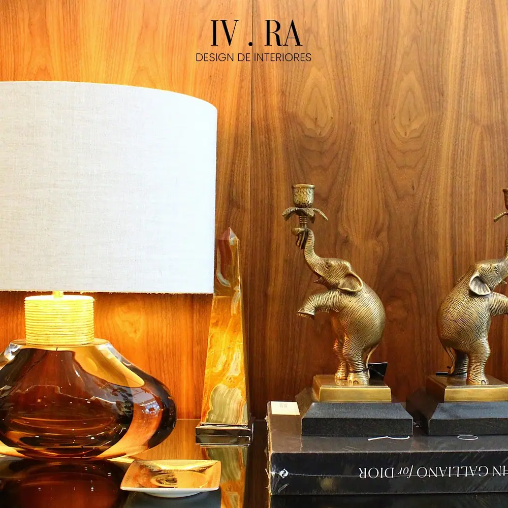
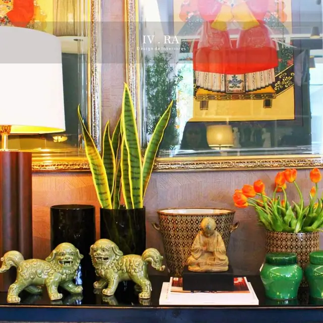
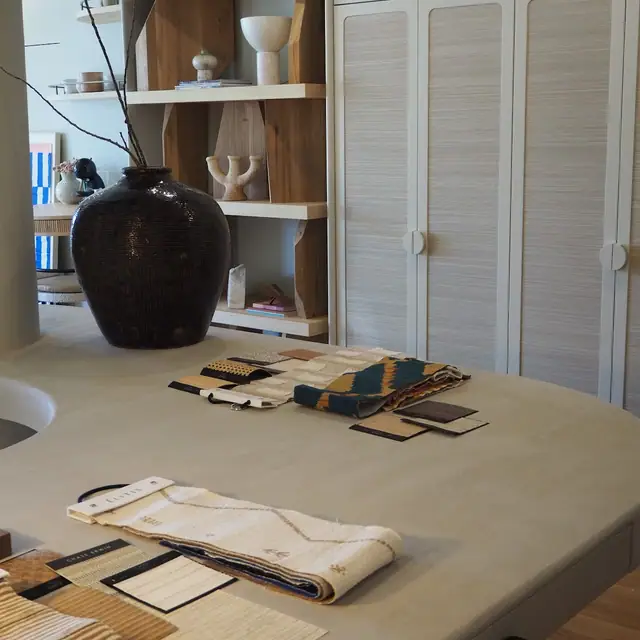
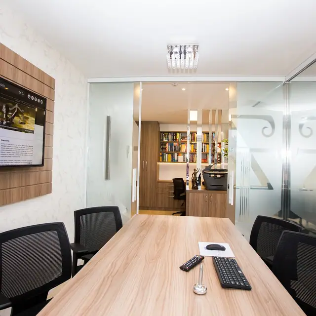
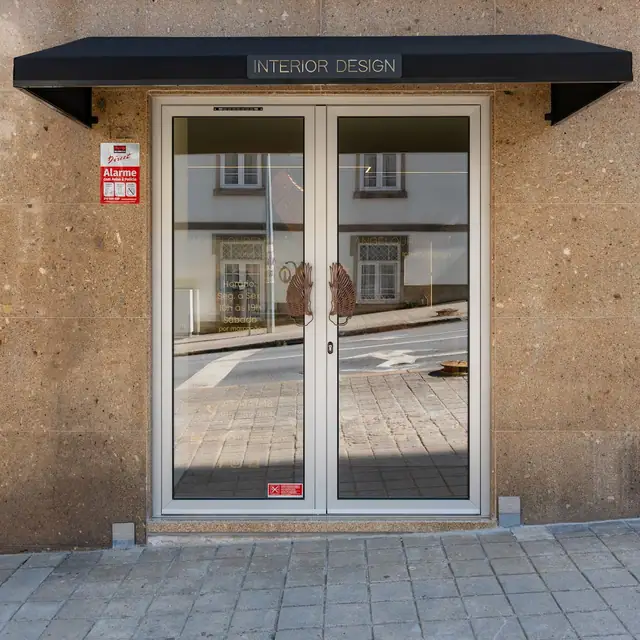
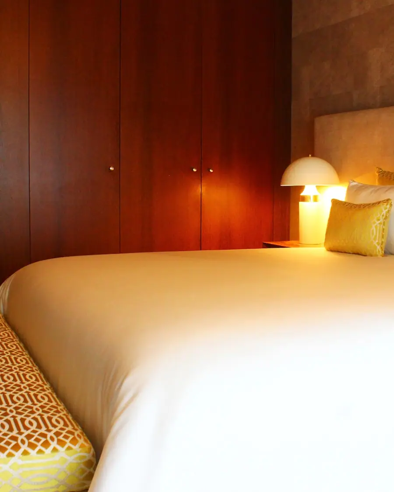

Decoração e design de interiores · Porto
Elegância e bom gosto em cada recanto.

Decoração de casas, restaurantes e espaços comerciais, com loja própria de peças de autor no Porto. A Ilda Ventura e a Raquel Andrade escolhem cada peça para o espaço ganhar personalidade.
- 5,0 ★★★★★
- 27 avaliações no Google
- Sábado
- também abre, das 9h30 às 18h30
- Do projeto
- à obra · Porto
Serviços
Espaços pensados para a sua rotina.
Escolha o serviço e fale diretamente com o estúdio Ilda Ventura & Raquel Andrade. Envie fotografias, medidas ou a planta da casa: a mensagem segue já escrita no WhatsApp.
-
I
Decoração e peças de autor
Seleção de mobiliário, iluminação, têxteis e objetos que dão personalidade a cada divisão.
Falar sobre isto
-
II
Design de interiores
Ambientes funcionais e acolhedores: layout, materiais, iluminação, mobiliário por medida e decoração.
Falar sobre isto
-
III
Casas e apartamentos
Projetos completos para a casa inteira: distribuição, luz, materiais e cada peça escolhida consigo.
Falar sobre isto
-
IV
Espaços comerciais
Lojas, restaurantes, clínicas e escritórios que traduzem a marca e funcionam bem no dia a dia.
Falar sobre isto
-
V
Consultoria de decoração
Uma ou poucas visitas para orientar cores, distribuição, iluminação e compras, sem projeto completo.
Falar sobre isto
Projetos
Projetos com assinatura, em casas reais.
Fotos de projetos entregues pelo estúdio Ilda Ventura & Raquel Andrade.





Um bom projeto começa pela forma como vive, não pela planta.

O estúdio
Decoração com assinatura, do Porto para o mundo.
Nas avaliações, os clientes falam de simpatia, atenção ao pormenor e bom gosto, de casas particulares a restaurantes inteiros decorados pela dupla.
- Decoração
- casas e apartamentos
- Comercial
- restaurantes e lojas
- Loja
- peças de autor
- Nota 5,0
- em 27 avaliações
Como funciona
Da primeira conversa à entrega.
Percebe o processo, os prazos e o investimento antes de começar.
- I.
A primeira conversa
Conta o que quer, como vive e quanto pretende investir. Fotografias e a planta ajudam muito.
- II.
Projeto
Estudo, imagens 3D e pormenorização: aprova cada etapa antes de avançar.
- III.
Execução
Projeto de execução para os fornecedores e, se quiser, acompanhamento da obra até à entrega.
Segunda a sábado: 09h30–18h30
Avaliações públicas
Quem já viveu o projeto, recomenda.
Avaliações reais de clientes publicadas no Google Maps.
Tive uma experiência incrível com a Ilda Ventura e a Raquel Andrade Decor! Elas ajudaram a transformar meu restaurante em um espaço lindamente decorado, que captura perfeitamente a atmosfera que eu havia imaginado.
Excelente atendimento, cuidado e atenciosidade! Serviço de decoração magnífico, repleto de elegância e bom gosto! Tornam qualquer recanto num paraíso!
Muito profissionais e com muito bom gosto! Tenho a decoração que sempre desejei ter.
Simpatia, profissionalismo, atenção aos detalhes e muito bom gosto. Recomendo!
Experiência, profissionalismo, bom gosto e muita atenção ao cliente.
Perguntas frequentes
As perguntas que todos os clientes fazem.
Não encontrou a sua? Envie a sua dúvida pelo WhatsApp com fotografias ou a planta da casa.
Onde fica o estúdio Ilda Ventura & Raquel Andrade?
O estúdio Ilda Ventura & Raquel Andrade fica em R. de São João de Brito, 605, loja 24, 4100-455 Porto. No botão "Como chegar" desta página abre o percurso diretamente no Google Maps.
Qual é o horário do estúdio Ilda Ventura & Raquel Andrade?
O estúdio Ilda Ventura & Raquel Andrade atende segunda a sábado, das 09h30 às 18h30. Ao domingo está encerrado. A marcação é feita pelo WhatsApp.
Como começar um projeto com o estúdio Ilda Ventura & Raquel Andrade?
Basta enviar mensagem pelo WhatsApp para o 963 933 982, no botão "Falar sobre o projeto". Envie mensagem pelo WhatsApp a contar o que quer fazer, com fotografias ou a planta, se tiver. É marcada uma conversa para perceber o seu espaço, a sua rotina e o seu orçamento.
Que serviços o estúdio Ilda Ventura & Raquel Andrade oferece?
Decoração e peças de autor, Design de interiores, Casas e apartamentos, Espaços comerciais e consultoria de decoração. O âmbito e o investimento são definidos depois da primeira conversa, de acordo com o seu projeto.
Posso comprar as peças da loja sem fazer projeto?
Pode. A loja está aberta a todos, e a equipa ajuda a escolher as peças certas para o seu espaço.
Qual a diferença entre arquitetura e design de interiores?
A arquitetura trata do edifício: estrutura, licenciamento e alterações à construção. O design de interiores cuida dos espaços por dentro: distribuição, materiais, mobiliário e iluminação.
O que é uma consultoria de decoração?
É um acompanhamento mais curto, com visitas e orientações práticas sobre cores, distribuição e compras, para quem não precisa de um projeto completo.
Contacto
Atendimento no Porto e à distância.
- Morada
- R. de São João de Brito, 605, loja 24
4100-455 Porto - Horário
- Segunda a sábado09h30 às 18h30DomingoEncerrado
- Telemóvel
- 963 933 982
O espaço que imagina começa numa conversa.
Fale com o estúdio Ilda Ventura & Raquel Andrade pelo WhatsApp e conte o que quer transformar.
Falar sobre o projeto